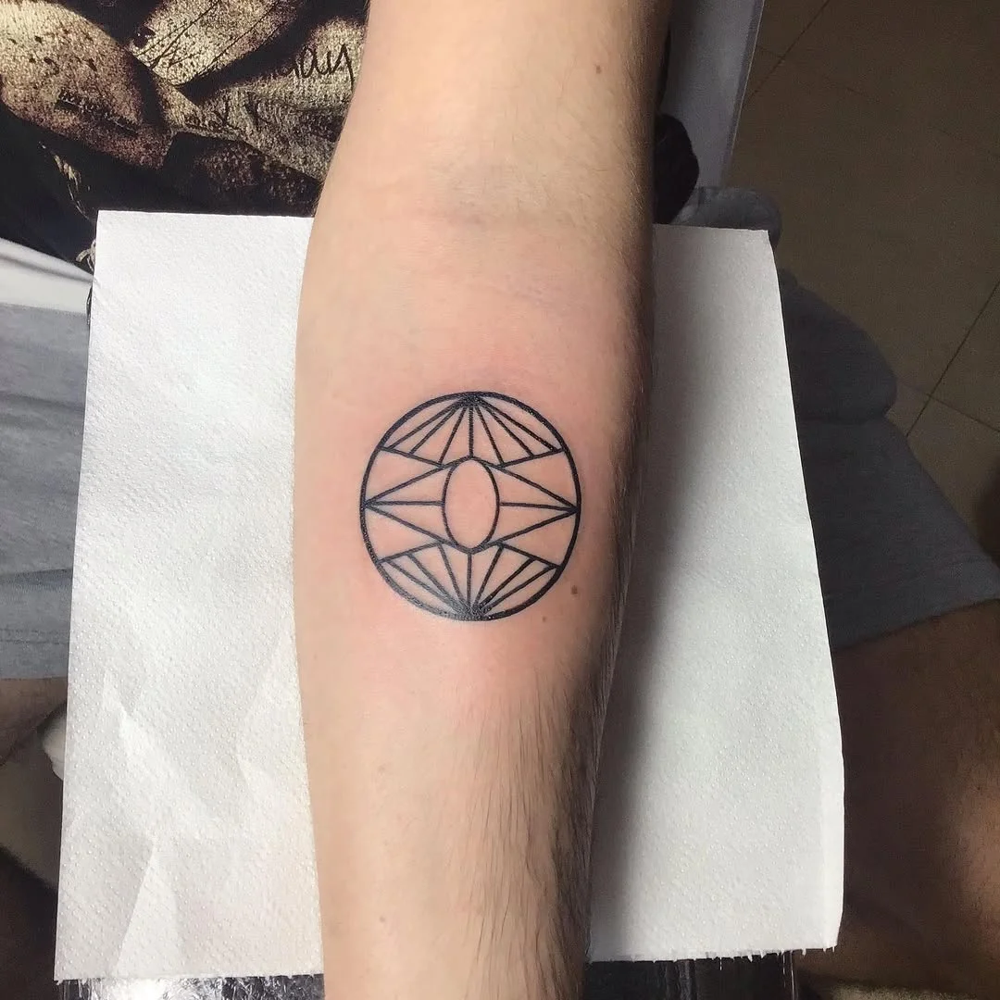
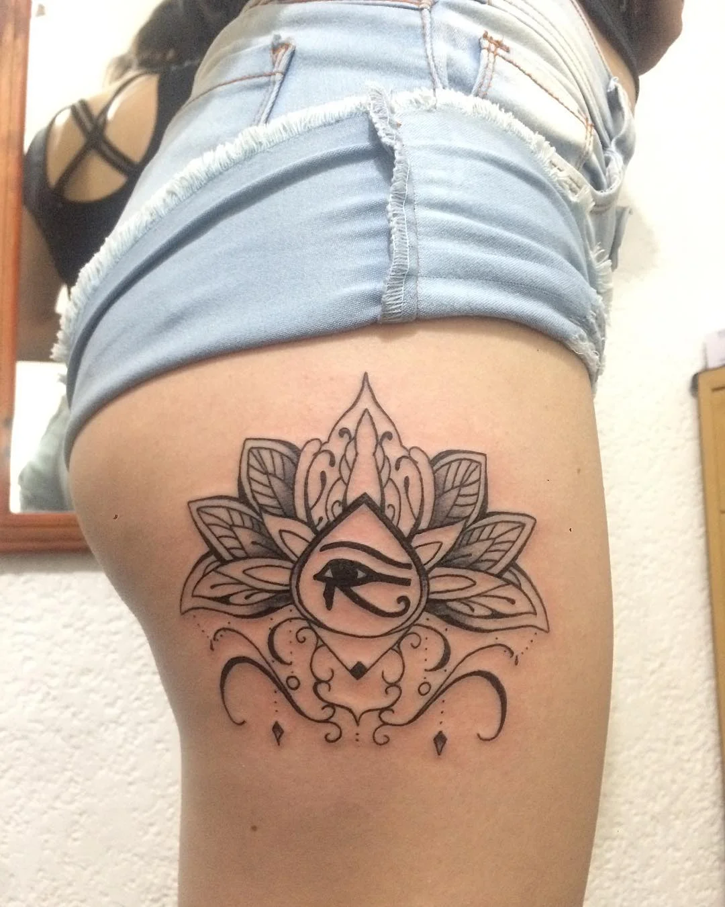
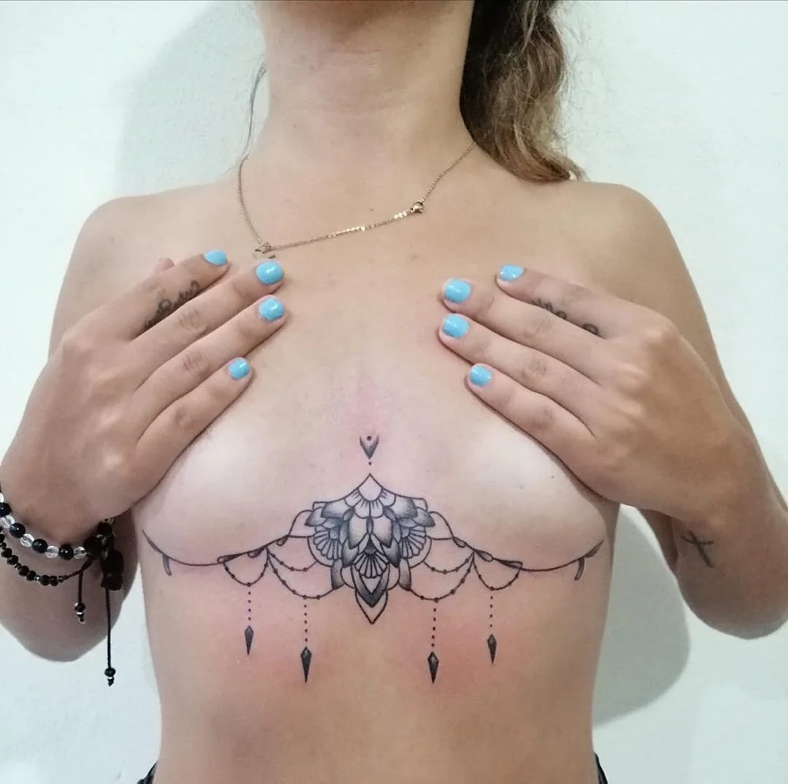
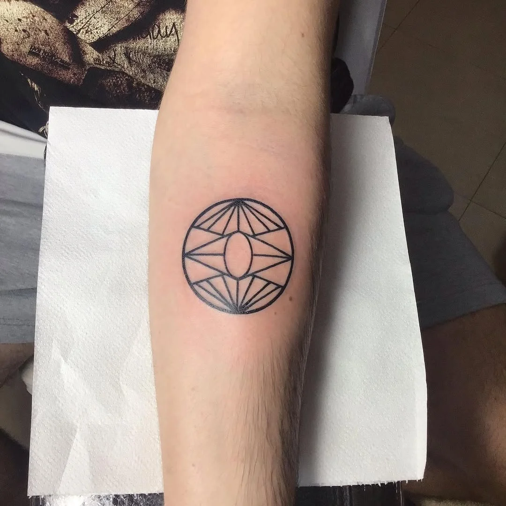
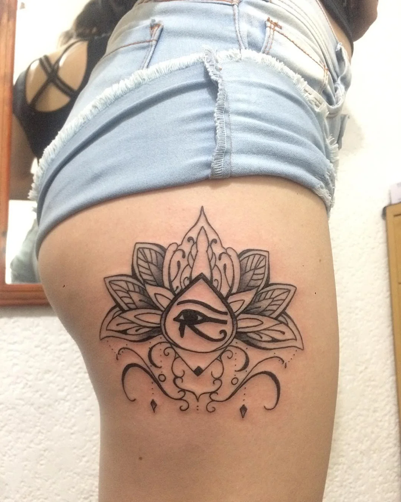
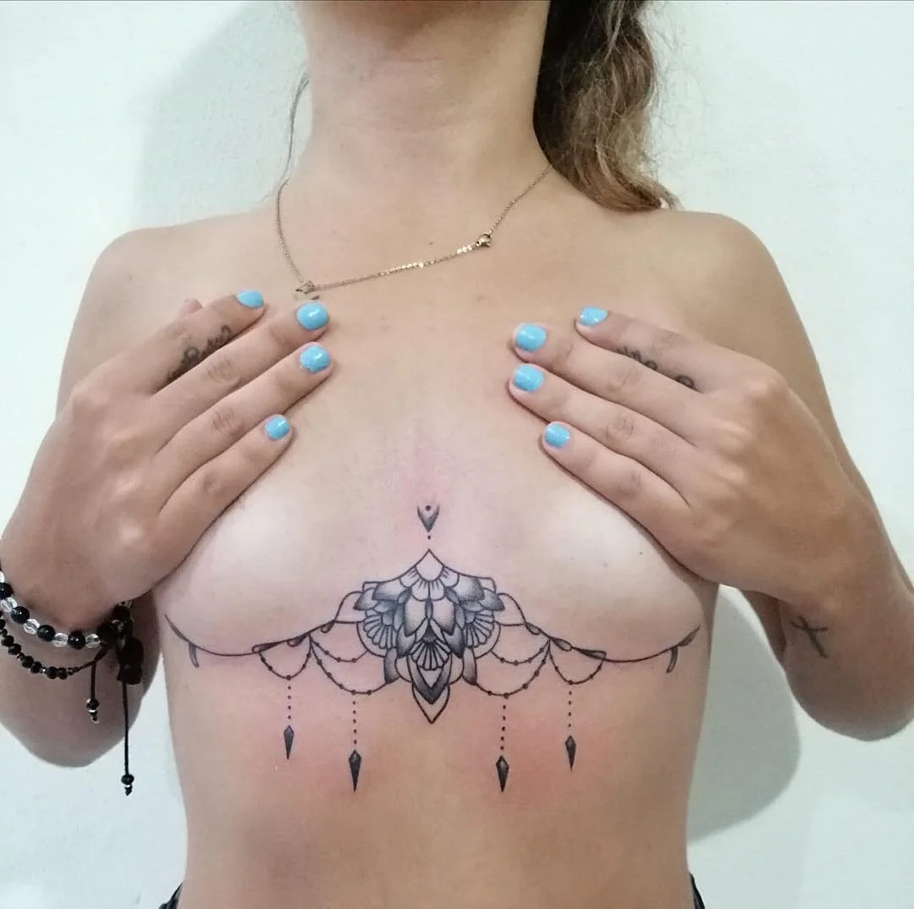
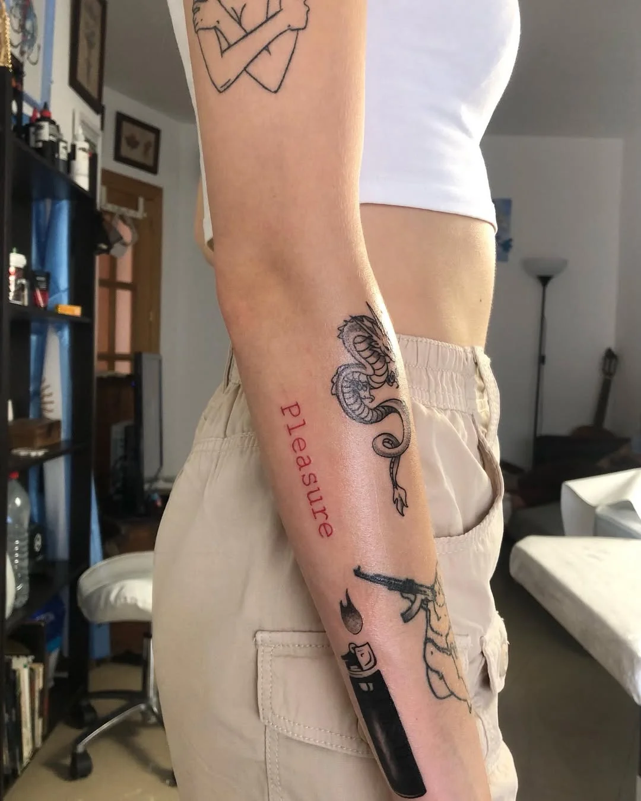
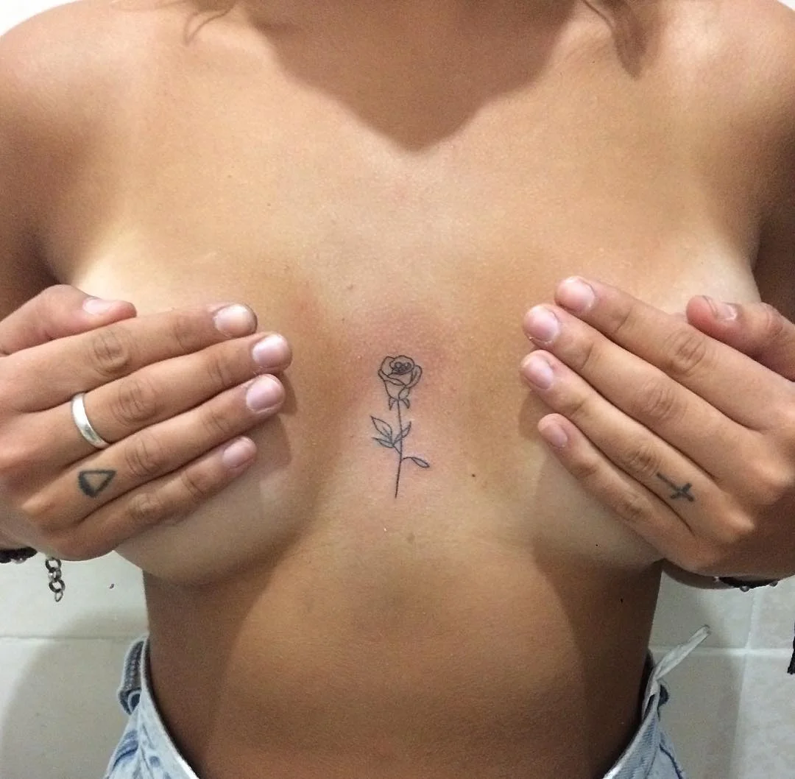
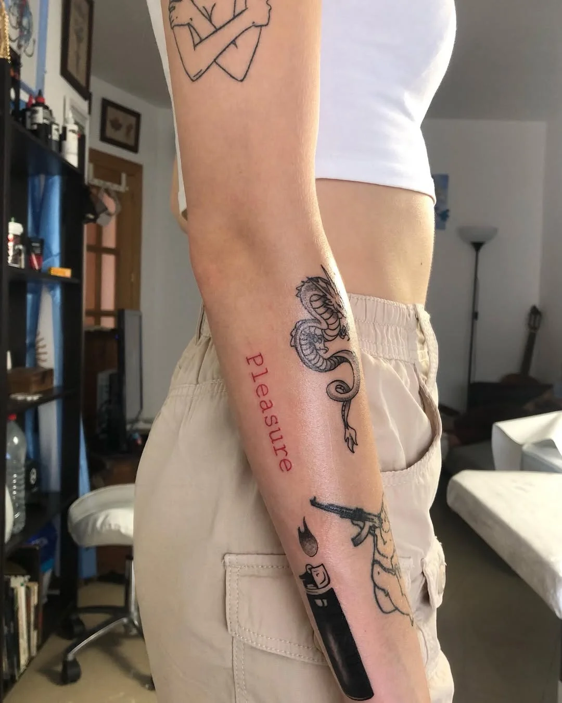
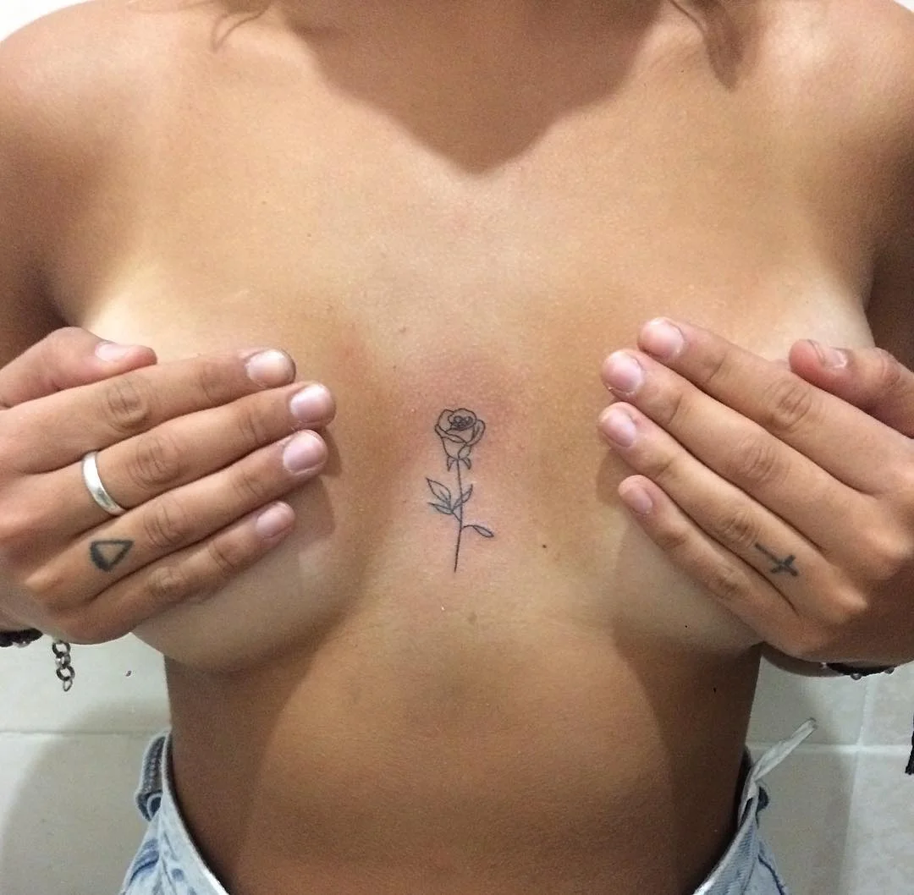

HOLEEFUK
ESTUDIO DE TATUAJES Y PIERCINGS
TATTOOS
.jpg)
.jpg)
.jpg)
.jpg)
Mininalista
.webp) 





 



Black Work


Realismo
Neo/Old School
Japones
SOBRE MI
Soy tatuador desde hace más de 13 años, aunque mi relación con el arte comenzó mucho antes. Como otros muchos, empecé cansado de trabajar por los sueños de otros, y decidí apostar por los míos. Mi camino en el mundo del tatuaje no fue académico: fue autodidacta, forjado en convenciones, observando, practicando con amigos - y con mis propias piernas- hasta entender que este oficio era mucho más que técnica. Hoy sigo formandome, explorando estilos y perfeccionando mi arte con cursos especializados y la guía de grandes referentes como Coreh López.
No me encasillo en un solo estilo: disfruto dersde los diseños más simples hasta los más complejos. Mi enfoque es crear una pieza única que hable por y para quien la lleva. El proceso comienza con una buena conversación, entendiendo qué quiere transmitir cada persona; a partir de ahí, todo fluye
Vengo del otro lado del océano, donde aprendí a tatuar desde la pasión. Al llegar a Europa, me enfrenté a normativas mucho más estrictas que me enseñaron otra parte del oficio: el respeto por los protocolos, la importancia de la higiene y la profesionalización del arte.
Mi estudio es un espacio seguro y relajado, donde el cliente es lo más importante. Una infusión, una charla, y sobre todo una conexión honesta son parte del ritual. Valoro la comunicación clara, porque tatuar no es solo dibujar en la piel: es entender una historia y transformarla en arte.
Para mí, un tatuaje no siempre necesita una gran explicación filosófica. A veces es simplemente embellecer tu cuerpo con tus sentimientos, tus sueños o tus heridas. Pero siempre debe dejarte con algo: confianza, satisfacción, fuerza. eso es lo que gusco que sientas al mirarte al espejo.
Cuando no estoy tatuando, me encontrarás con una guitarra en mano, modelando arcilla o disfrutando del fútbol. Y antes de cada sesión, tengo mi propio ritual: preparo todo, estiro el cuerpo, elijo la musica... y me entrego a crear.
No busco compararme con otros. Cada tatuador tiene lo suyo. Yo solo prometo dar lo mejor de mí, ciudar cada detalle y superar tus espectativas.